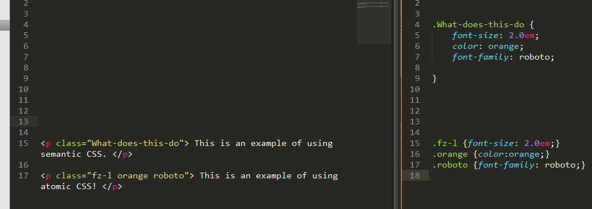

What is atomic CSS?
The greatest thing ever....
09/25/2015
The atomic CSS style is a way of creating many different classes that do just one thing. Instead of having a class called "paragraph things" that does things like change font size or color of the font. You can create a class called "black" that changes the font color to black and "fz-l" that makes the font larger. This is exceptionally useful when you want to reuse CSS elements throughout a file. Many CSS functions are reused so often, that it makes sense to turn them into classes that are easy to access.
We can reuse the "fz-l" on other text we want to make larger later too, but not necessarily orange. Or we can make text orange and not change the size at all. I highly recommend adopting the atomic CSS style. While atomic CSS looks like more work to implement for the short term. In the long term it will make your life much simpler and organized.